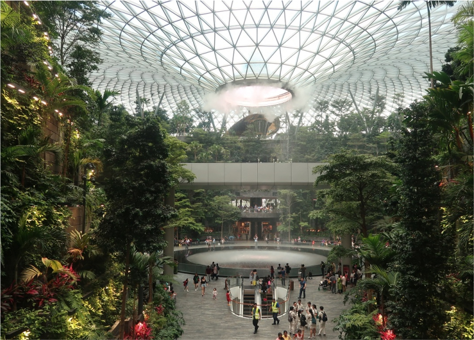
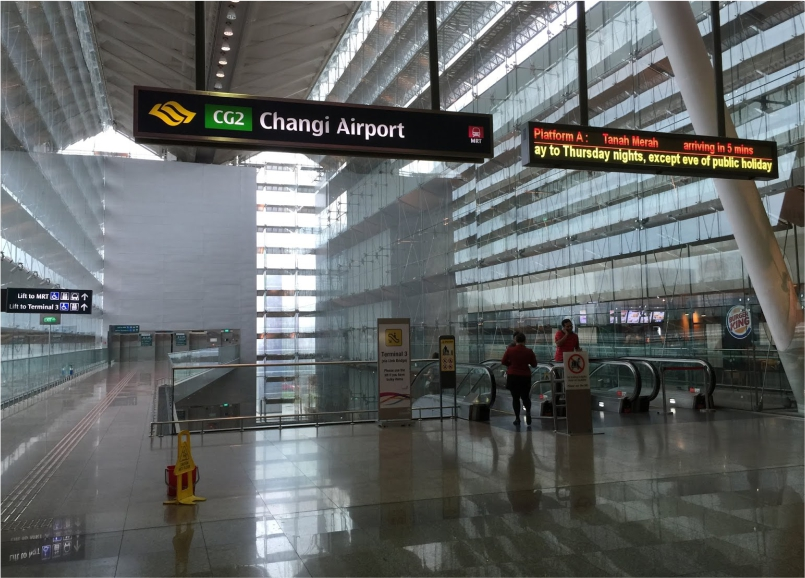
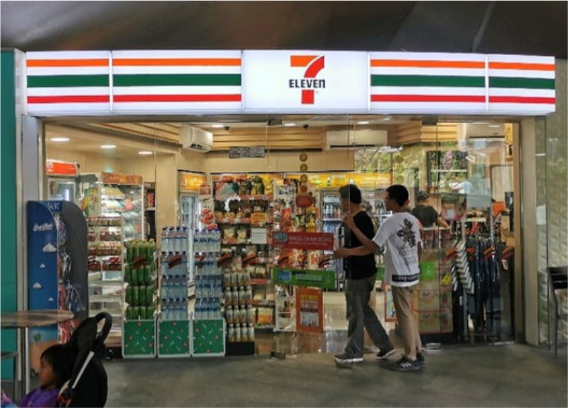

Mendarat di Changi dan Menjelajahi Singapura
Pesawat kami mendarat dengan mulus di Bandara Changi, salah satu bandara tersibuk dan terbaik di dunia. Saat roda pesawat menyentuh landasan, suara dari kabin menandakan bahwa kami telah tiba. Waktu di layar ponsel saya menunjukkan pukul 7.30 WIB—itu berarti pukul 8.30 pagi waktu Singapura. Rasanya seperti melangkah ke masa depan, mengingat perbedaan satu jam di zona waktu antara Indonesia dan Singapura. Langit sudah cerah, dan dari jendela, saya bisa melihat aktivitas bandara yang sibuk.
Begitu keluar dari pesawat di Terminal 2, kami langsung merasakan atmosfer modern dan megah dari bandara ini. Changi selalu diakui sebagai salah satu bandara terbaik di dunia, dan dari desain serta suasana yang ditawarkan, saya bisa langsung memahami alasannya. Tanaman hijau yang menghiasi setiap sudut dan dinding kaca yang besar memberikan kesan segar dan alami meskipun ini adalah pusat transportasi yang begitu sibuk. Sebelum melanjutkan, kami singgah sebentar di restroom. Seperti yang saya duga, semuanya sangat bersih dan terawat, memperkuat kesan bahwa bandara ini mengutamakan kenyamanan para penumpang.
Setelah beristirahat sejenak, kami bergegas menuju tujuan pertama: Jewel Changi, kompleks rekreasi dan perbelanjaan yang terkenal di dalam bandara. Untuk mencapainya, kami harus menaiki shuttle bus dari Terminal 2 ke Terminal 1. Begitu tiba, kami disambut oleh pemandangan menakjubkan dari Rain Vortex, air terjun indoor tertinggi di dunia yang berada di tengah-tengah Jewel. Airnya mengalir deras dari lubang di atap, membentuk kolam besar di bawahnya, sementara dikelilingi oleh taman-taman indah. Tempat ini memang dirancang bukan hanya untuk berbelanja, tetapi juga untuk memberikan pengalaman visual yang menakjubkan kepada setiap pengunjung. Kami segera mengambil beberapa foto di sekitar air terjun, mencoba menemukan sudut terbaik dari berbagai sisi.

Setelah puas berfoto, kami berjalan-jalan di sekitar Jewel, melihat-lihat toko-toko mewah dan restoran yang menawarkan berbagai macam kuliner. Meskipun godaan untuk berbelanja besar, kami menahan diri karena perjalanan kami baru dimulai. Lagipula, kami sudah merasa lapar dan memutuskan untuk segera menuju kota. Kami berencana menaiki MRT (Mass Rapid Transit), transportasi publik yang sangat terkenal di Singapura karena efisiensinya. Namun, untuk naik MRT, kami harus membeli EZ-Link Card, kartu prabayar yang digunakan untuk membayar transportasi umum di sini.
Ketika ingin membuat EZ Link, saya bertanya kepada petugas, “Excuse me, I want to make EZ-Link.” Petugas menjawab dalam Singlish, campuran bahasa Inggris dengan dialek lokal Singapura. Awalnya kami sedikit bingung dengan aksennya, tetapi kemudian ia beralih menggunakan Bahasa Melayu, salah satu bahasa resmi di sini. “Lurus je, follow jalan ni, lepastu tengok tangga, pusing kiri,” katanya sambil tersenyum ramah. Dengan arahan tersebut, kami berhasil mendapatkan EZ-Link dan siap menjelajahi kota.

Kami menaiki MRT dari Changi Airport Station menuju City Hall. Di dalam kereta, suasana begitu tenang dan teratur, bahkan di jam sibuk pagi. MRT di Singapura sangat bersih dan nyaman, tidak ada sampah atau grafiti di mana pun. Selama perjalanan, saya melihat beberapa penumpang dengan santai membaca buku atau mendengarkan musik. Kami menikmati pemandangan yang mulai terlihat saat kereta melintas di atas tanah, menandakan bahwa kami semakin dekat dengan pusat kota.
Setibanya di City Hall, kami berjalan kaki menuju Merlion Park, rumah bagi patung singa ikonik yang menjadi simbol Singapura. Patung ini memiliki kepala singa dan tubuh ikan, melambangkan sejarah Singapura sebagai desa nelayan. Kami berjalan di sepanjang tepi pantai, dikelilingi oleh turis yang sibuk mengambil foto. Patung Merlion yang besar berdiri dengan megah di depan pemandangan Marina Bay Sands yang terkenal. Kami tidak mau ketinggalan, segera mengambil foto dengan latar belakang patung dan gedung-gedung pencakar langit yang menjulang tinggi.
Setelah puas menikmati suasana di Merlion Park, perut kami mulai terasa lapar. Kami memutuskan untuk mencari camilan di sekitar. Tak jauh dari taman, kami menemukan 7-Eleven, minimarket yang sangat praktis dan mudah dijumpai di mana-mana. Kami membeli beberapa makanan ringan dan minuman untuk menyegarkan diri. Meskipun hanya makanan sederhana, kami merasa cukup puas dan siap melanjutkan perjalanan.

Destinasi berikutnya adalah Gardens by the Bay, taman futuristik yang terkenal dengan Supertree Grove—struktur raksasa berbentuk pohon yang dihiasi dengan lampu-lampu indah. Ketika kami tiba, pemandangannya sangat memukau. Supertree menjulang tinggi di langit, dan taman ini penuh dengan berbagai jenis tanaman dari seluruh dunia. Kami menghabiskan waktu berjalan di antara Supertree, menikmati suasana futuristik yang unik. Kami juga naik ke OCBC Skyway, jembatan gantung yang menghubungkan beberapa Supertree dan memberikan pemandangan panorama Singapura yang menakjubkan.
Karena perjalanan kami hanya transit, kami tidak berencana untuk menginap di Singapura. Setelah menghabiskan beberapa jam menikmati keindahan kota, kami kembali ke Bandara Changi. Masih ada beberapa jam sebelum penerbangan kami berikutnya ke Thailand, jadi kami memanfaatkan waktu untuk beristirahat sejenak di salah satu lounge bandara yang nyaman. Dengan fasilitas yang lengkap dan suasana yang tenang, kami dapat bersantai sebelum melanjutkan petualangan kami.
Meskipun hanya transit, pengalaman singkat kami di Singapura memberikan kesan yang begitu mendalam. Keindahan, keteraturan, dan kemajuan teknologi di kota ini membuat kami ingin kembali suatu hari nanti. Petualangan kami baru saja dimulai, dan Thailand menanti dengan kejutan-kejutan seru berikutnya!